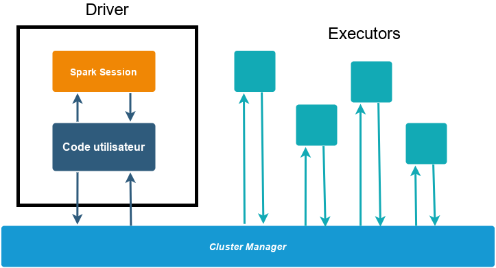
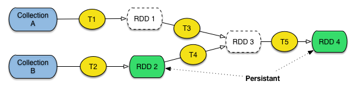
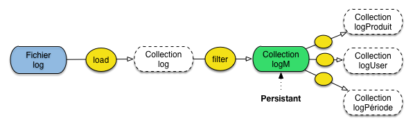
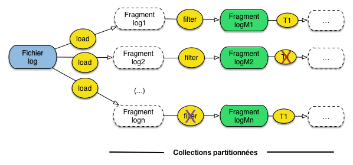
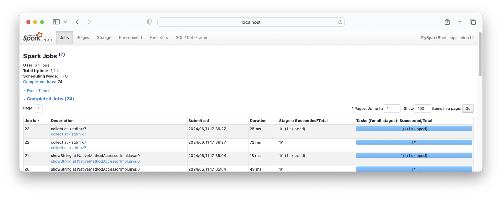
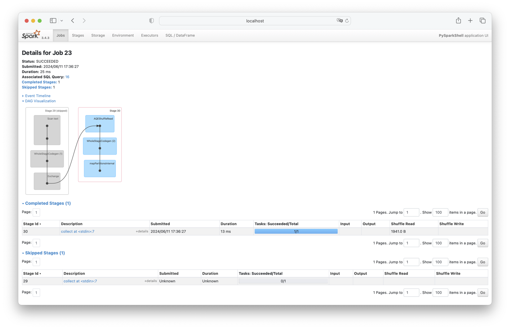

Etude de cas: Apache Spark¶
Avec le système Spark, nous abordons un premier exemple (sans doute le plus en vogue au moment où ces lignes sont écrites) d’environnements dédiés au calcul distribué à grande échelle qui proposent des fonctionnalités bien plus puissantes que le simple MapReduce des origines, toujours disponible dans l’écosystème Hadoop.
Ces fonctionnalités consistent notamment en un ensemble d’opérateurs de second ordre (voir cette notion dans le chapitre Calcul distribué: introduction à Hadoop) qui étendent considérablement la simple paire constituée du Map et du Reduce. Nous avons eu un aperçu de ces opérateurs avec Pig, qui reste cependant lié à un contexte d’exécution MapReduce (un programme Pig est compilé et exécuté comme une séquence de jobs MapReduce).
Entre autres limitations, cela ne couvre pas une classe importante d’algorithmes: ceux qui procèdent par itérations sur un résultat progressivement affiné à chaque exécution. Ce type d’algorithme est très fréquent dans le domaine général de la fouille de données: PageRank, kMeans, calculs de composantes connexes dans les graphes, etc.
Ce chapitre propose une introduction au système Spark.
S1: Introduction à Spark¶
Supports complémentaires
Avec MapReduce, la spécification de l’itération reste à la charge du programmeur; il faut stocker le résultat d’un premier job dans une collection intermédiaire et réiterer le job en prenant la collection intermédiaire comme source. C’est laborieux pour l’implantation, et surtout très peu efficace quand la collection intermédiaire est grande. Le processus de sérialisation/désérialisation sur disque propre à la gestion de la reprise sur panne en MapReduce entraîne des performances médiocres.
Dans Spark, la méthode est très différente. Elle consiste à placer ces jeux de données en mémoire RAM et à éviter la pénalité des écritures sur le disque. Le défi est alors bien sûr de proposer une reprise sur panne automatique efficace.
Architecture système¶
Spark est un framework qui coordonne l’exécution de tâches sur des données en les répartissant au sein d’un cluster de machines. Il est voulu comme extrêmement modulaire et flexible. Ainsi, la gestion même du cluster de machines peut être déléguée soit au cluster manager de Spark, soit à Yarn ou à Mesos (d’autres gestionnaires pour Hadoop).
Le programmeur envoie au framework des Spark Applications, pour lesquelles Spark affecte des ressources (RAM, CPU) du cluster en vue de leur exécution. Une Spark application se compose d’un processus driver et d'executors. Le driver est essentiel pour l’application car il exécute la fonction main() et est responsable de 3 choses :
conserver les informations relatives à l’application ;
répondre aux saisies utilisateur ou aux demandes de programmes externes ;
analyser, distribuer et ordonnancer les tâches (cf plus loin).
Un executor n’est responsable que de 2 choses : exécuter le code qui lui est assigné par le driver et lui rapporter l’état d’avancement de la tâche.
Le driver est accessible programmatiquement par un point d’entrée appelé
SparkSession, que l’on trouve derrière une variable spark.
La figure Fig. 102 illustre l’architecture système de Spark. Dans cet exemple il y a un driver et 4 executors. La notion de nœud dans le cluster est absente : les utilisateurs peuvent configurer combien d’exécutors reposent sur chaque nœud.
{kind=link}

Fig. 102 L’architecture système de Spark¶
Spark est un framework multilingue : les programmes Spark peuvent être écrits en Scala, Java, Python, SQL et R. Cependant, il d’abord écrit en Scala, il s’agit de son langage par défaut. C’est celui dans lequel nous travaillerons. Il est concis et offre l’intégralité de l’API. Attention, l’API est complète en Scala et Java, pas nécessairement dans les autres langages.
Note
Spark peut aussi fonctionner en mode local, dans lequel driver et executors ne sont que des processus de la machine. La puissance de Spark est de proposer une transparence (pour les programmes) entre une exécution locale ou sur un cluster.
Architecture applicative¶
L’écosystème des API de Spark est hiérarchisé et comporte essentiellement 3 niveaux :
les APIs bas-niveau, avec les RDDs (Resilient Distributed Dataset);
les APIs de haut niveau, avec les Datasets, DataFrames et SQL;
les autres bibliothèques (Structured Streaming, Advanced Analytics, etc.).
Nous allons laisser de côté dans ce cours le dernier niveau : l’exploration des bibliothèques de machine learning relève du cours RCP216.
Initialement, les RDDs ont été au centre de la programmation avec Spark (ce qui a pour conséquence que de nombreuses ressources que vous trouverez sur Spark reposeront dessus). Aujourd’hui, on leur préfère des APIs de plus haut niveau, que nous allons explorer en détail, les Datasets et DataFrames. Celles-ci présentent l’avantage d’être proches de structures de données connues (avec une vision tabulaire), donc de faciliter le passage à Spark. En outre, elles sont optimisées très efficacement par le framework, d’où des gains de performance.
L’innovation des RDDs¶
La principale innovation apportée par Spark est le concept de Resilient Distributed Dataset (RDD). Un RDD est une collection (pour en rester à notre vocabulaire) calculée à partir d’une source de données (par exemple une base de données Cassandra, un flux de données, un autre RDD) et placée en mémoire RAM. Spark conserve l’historique des opérations qui a permis de constituer un RDD, et la reprise sur panne s’appuie essentiellement sur la préservation de cet historique afin de reconstituer le RDD en cas de panne. Pour le dire brièvement: Spark n’assure pas la préservation des données en extension mais en intention. La préservation d’un programme qui tient en quelques lignes de spécification (cf. les programmes Pig) est beaucoup plus facile et efficace que la préservation du jeu de données issu de cette chaîne. C’est l’idée principale pour la résilience des RDDs.
Par ailleurs, les RDDs représentent des collections partitionnées et distribuées. Chaque RDD est donc constitué de ce que nous avons appelé fragments. Une panne affectant un fragment individuel peut donc être réparée (par reconstitution de l’historique) indépendamment des autres fragments, évitant d’avoir à tout recalculer.
Les DataFrames et Datasets que nous utiliserons plus loin reposent sur les RDDs, c’est-à-dire que Spark transforme les opérations sur les DataFrames/Datasets en opérations sur les RDDs. En pratique, vous n’aurez que rarement besoin de RDDs (sauf si vous maintenez du code ancien, ou que votre expertise vous amène à aller plus loin que les Structured APIs).
Actions et transformations : la chaîne de traitement Spark¶
Un élément fondamental de la pratique de Spark réside dans l’immutabilité des collections, elles ne peuvent être modifiées après leur création. C’est un peu inhabituel et cela induit des manières nouvelles de travailler.
En effet, pour passer des données d’entrée à la sortie du programme, on devra penser une chaîne de collections qui constitueront les étapes du traitement. La (ou les) première(s) collection(s) contien(nen)t les données d’entrée. Ensuite, chaque collection est le résultat de transformations sur les précédentes structures, l’équivalent de ce que nous avons appelé opérateur dans Pig. Comme dans Pig, une transformation sélectionne, enrichit, restructure une collection, ou combine deux collections. On retrouve dans Spark, à peu de choses près, les mêmes opérateurs/transformations que dans Pig, comme le montre la table ci-dessous (qui n’est bien sûr pas exhaustive: reportez-vous à la documentation pour des compléments).
Opérateur |
Description |
|---|---|
|
Prend un document en entrée et produit un document en sortie |
|
Filtre les documents de la collection |
|
Prend un document en entrée, produit un ou plusieurs document(s) en sortie |
|
Regroupement de documents par une valeur de clé commune |
|
Réduction d’une paire (k, [v]) par une agrégation du tableau [v] |
|
Produit cartésien de deux collections |
|
Jointure de deux collections |
|
Union de deux collections |
|
Cf. la description de l’opérateur dans la section sur Pig |
|
Tri d’une collection |
Les collections obtenues au cours des différentes étapes d’une chaîne de traitement sont stockées dans des RDDs, des DataFrames, etc., selon l’API employée. C’est exactement la notion que nous avons déjà étudiée avec Pig. La différence essentielle est que dans Spark, les RDD ou DataFrames peuvent être marquées comme étant persistants car ils peuvent être réutilisés dans d’autres chaînes. Spark fait son possible pour stocker les structures persistantes en mémoire RAM, pour un maximum d’efficacité.
{kind=link}

Fig. 103 RDD persistants et transitoires dans Spark.¶
Les collections forment un graphe construit par application de transformations à partir de collections stockées (Fig. 103). S’il n’est pas marqué comme persistant, le RDD/DataFrame sera transitoire et ne sera pas conservé en mémoire après calcul (c’est le cas des RDD 1 et 3 sur la figure). Sinon, il est stocké en RAM, et disponible comme source de données pour d’autres transformations.
Par opposition aux transformations qui produisent d’autres RDD ou DataFrames, les actions produisent des valeurs (pour l’utilisateur). L’évaluation des opérations en Spark est dite « paresseuse », c’est-à-dire que Spark attend le plus possible pour exécuter le graphe des instructions de traitement. Plus précisément, une action déclenche l’exécution des transformations qui la précèdent.
L’évaluation paresseuse (lazy evaluation) permet à Spark de compiler de
simples transformations de DataFrames en un plan d’exécution physique
efficacement réparti dans le cluster. Un exemple de cette efficacité est
illustrée par le concept de predicate pushdown : si un filter() à la
fin d’une séquence amène à ne travailler que sur 1 ligne des données d’entrée,
les autres opérations en tiendront compte, optimisant d’autant la performance en
temps et en espace.
RDDs, Dataset et DataFrame¶
Un RDD, venant de l’API bas-niveau, est une « boîte » destinée à contenir n’importe quel document, sans aucun préjugé sur la structure (ou l’absence de structure) de ce dernier. Cela rend le système très généraliste, mais empêche une manipulation fine des constituants des documents, comme par exemple le filtrage en fonction de la valeur d’un champ. C’est le programmeur de l’application qui doit fournir la fonction effectuant le filtre.
On l’a dit, Spark implémente une API de plus haut niveau avec des structures assimilables à des tables relationnelles : les Dataset et DataFrame. Ils comportent un schéma, avec les définitions des colonnes. La connaissance de ce schéma – et éventuellement de leur type – permet à Spark de proposer des opérations plus fines, et des optimisations inspirées des techniques d’évaluation de requêtes dans les systèmes relationnels. En fait, on se ramène à une implantation distribuée du langage SQL. En interne, un avantage important de la connaissance du schéma est d’éviter de recourir à la sérialisation des objets Java (opération effectuée dans le cas des RDD pour écrire sur disque et échanger des données en réseau).
Note
Saluons au passage le mouvement progressif de ces systèmes vers une ré-assimilation des principes du relationnel (schéma, structuration des données, interrogation à la SQL, etc.), et la reconnaissance des avantages, internes et externes, d’une modélisation des données. Du NoSQL à BackToSQL!
On distingue les Dataset, dont le type des colonnes est connu, et les DataFrames.
Un DataFrame n’est rien d’autre qu’un Dataset (DataFrame =
Dataset[Row]) contenant des lignes de type Row dont le schéma précis n’est
pas connu. Ce typage des structures de données est lié au langage de
programmation : Python et R étant dynamiquement typés, ils n’accèdent qu’aux
DataFrames. En Scala et Java en revanche, on utilise les Datasets, des objets
JVM fortement typés.
Tout cela est un peu abstrait? Voici un exemple simple qui permet d’illustrer les principaux avantages des Dataset/DataFrame. Nous voulons appliquer un opérateur qui filtre les films dont le genre est « Drame ». On va exprimer le filtre (en simplifiant un peu) comme suit:
films.filter(film.getGenre() == 'Drame');
Si films est un RDD, Spark n’a aucune idée sur la structure des documents
qu’il contient. Spark va donc instancier un objet Java (éventuellement en
dé-sérialisant une chaîne d’octets reçue par réseau ou lue sur disque) et
appeler la méthode getGenre(). Cela peut être long, et impose surtout de
créer un objet pour un simple test.
Avec un Dataset ou DataFrame, le schéma est connu et Spark utilise son
propre système d’encodage/décodage à la place de la sérialisation Java. De plus,
dans le cas des Dataset, la valeur du champ genre peut être testée
directement sans même effectuer de décodage depuis la représentation binaire.
Il est, en résumé, tout à fait préférable d’utiliser les Dataset dès que l’on a affaire à des données structurées.
Exemple: analyse de fichiers log¶
Prenons un exemple concret: dans un serveur d’application, on constate qu’un module M produit des résultats incorrects de temps en temps. On veut analyser le fichier journal (log) de l’application qui contient les messages produits par le module suspect, et par beaucoup d’autres modules.
On construit donc un programme qui charge le log sous forme de collection, ne conserve que les messsages produits par le module M et analyse ensuite ces messages. Plusieurs analyses sont possibles en fonction des causes suspectées: la première par exemple regarde le log de M pour un produit particulier, la seconde pour un utilisateur particulier, la troisième pour une tranche horaire particulière, etc.
Avec Spark, on va créer un DataFrame logM persistant, contenant les messages produits par M.
On construira ensuite,
à partir de logM de nouveaux DataFrames dérivés pour les analyses spécifiques (Fig. 104).
{kind=link}

Fig. 104 Scénario d’une analyse de log avec Spark¶
On combine deux transformations pour construire logM, comme le montre le programme suivant (qui n’est pas la syntaxe
exacte de Spark, que nous présenterons plus loin).
// Chargement de la collection
log = load ("app.log") as (...)
// Filtrage des messages du module M
logM = filter log with log.message.contains ("M")
// On rend logM persistant !
logM.persist();
On peut alors construire une analyse basée sur le code produit directement à partir de logM.
// Filtrage par produit
logProduit = filter logM with log.message.contains ("product P")
// .. analyse du contenu de logProduit
Et utiliser également logM pour une autre analyse, basée sur l’utilisateur.
// Filtrage par utilisateur
logUtilisateur = filter logM with log.message.contains ("utilisateur U")
// .. analyse du contenu de logProduit
Ou encore par tranche horaire.
// Filtrage par utilisateur
logPeriode = filter logM with log.date.between d1 and d2
// .. analyse du contenu de logPeriode
logM est une sorte de « vue » sur la collection initiale, dont la persistance
évite de refaire le calcul complet à chaque analyse.
Reprise sur panne¶
Pour comprendre la reprise sur panne, il faut se pencher sur le second aspect des RDD: la distribution. Un RDD est une collection partitionnée (cf. chapitre Systèmes NoSQL: le partitionnement), les DataFrames le sont aussi. La Fig. 105 montre le traitement précédent dans une perspective de distribution. Chaque DataFrame, persistant ou non, est composé de fragments répartis dans la grappe de serveurs.
{kind=link}

Fig. 105 Partitionnement et reprise sur panne dans Spark.¶
Si une panne affecte un calcul s’appuyant sur un fragment F de DataFrame
persistant (par exemple la transformation notée T et marquée par une
croix rouge sur la figure), il suffit de le relancer à partir de F. Le gain
en temps est considérable!
La panne la plus sévère affecte un fragment de DataFrame non persistant (par exemple celui marqué par une croix violette). Dans ce cas, Spark a mémorisé la chaîne de traitement ayant constitué le DataFrame, et il suffit de ré-appliquer cette chaîne en remontant jusqu’aux fragments qui précèdent dans le graphe des calculs.
Dans notre cas, il faut parcourir à nouveau le fichier log pour créer le
fragment logn. Si les collections stockées à l’origine du calcul sont
elles-mêmes partitionnées (ce qui n’est sans doute pas le cas pour un fichier
log), il suffira d’accéder à la partie de la collection à l’origine des
calculs menant au DataFrame défaillant.
En résumé, Spark exploite la capacité à reconstruire des fragments de RDD/DataFrame par application de la chaîne de traitement, et ce en se limitant si possible à une partie seulement des données d’origine. La reprise peut prendre du temps, mais elle évite un recalcul complet. Si tout se passe bien (pas de panne) la présence des résultats intermédiaires en mémoire RAM assure de très bonnes performances.
Quiz¶


S4: Spark¶
Supports complémentaires
Il est temps de passer à l’action. Nous allons commencer par montrer comment effectuer des transformations sur des données non-structurées avec des DataFrames standard. Les exemples qui suivent sont proposés en Python, mais d’autres interfaces existent, notamment en Scala et en R. Scala est un langage fonctionnel, doté d’un système d’inférence de types puissant, ce qui le rend particulièrement approprié pour exprimer des chaînes de traitements sous la forme d’une séquence d’appels de fonctions. Je fais l’hypothèse que la plupart de mes lecteurs seront plus familiers avec Python.
Le plus simple pour reproduire ces commandes est
de télécharger dans un répertoire spark la dernière
version de Spark depuis le site http://spark.apache.org.
L’installation comprend
un sous-répertoire bin dans lequel se trouvent les commandes
qui nous intéressent (et notamment l’interpréteur pyspark).
Vous pouvez placer le chemin vers spark/bin dans votre
variable PATH, selon des spécificités qui dépendent de votre environnement:
à ce stade du cours vous devriez être rôdés à ce type de manœuvre.
pyspark
Aux numéros de version près, vous devriez obtenir l’affichage suivant:
Welcome to
____ __
/ __/__ ___ _____/ /__
_\ \/ _ \/ _ `/ __/ '_/
/__ / .__/\_,_/_/ /_/\_\ version 3.4.3
/_/
Using Python version 3.10.0 (v3.10.0:b494f5935c, Oct 4 2021 14:59:20)
Spark context Web UI available at http://163.173.78.98:4040
Spark context available as 'sc' (master = local[*], app id = local-1718116101741).
SparkSession available as 'spark'.
>>>
C’est parti !
Transformations et actions¶
Vous pouvez récupérer le fichier http://b3d.bdpedia.fr/files/loups.txt pour faire un essai (il est temps de savoir à quoi s’en tenir à propos de ces loups et de ces moutons!), sinon n’importe quel fichier texte fait l’affaire. Copiez-collez les commandes ci-dessous.
loupsEtMoutons = spark.read.text("loups.txt")
Nous avons créé un premier DataFrame nommé loupsEtMoutons
contenant autant de documents que de lignes dans le fichier en entrée,
avec une unique colonne value.
Spark propose des actions directement
applicables à un DataFrame et produisant des résultats scalaires.
(Un DataFrame est interfacé comme un objet auquel nous pouvons appliquer
des méthodes.) Voici des exemples des méthodes count() et first().
loupsEtMoutons.count() # Nombre de documents dans ce RDD
res0: Long = 4
loupsEtMoutons.first() // Premier document du RDD
res1: String = Le loup est dans la bergerie.
La fonction show() est particulière: elle affiche le contenu
du Dataframe sous forme de table.
loupsEtMoutons.show() // Récupération du dataframe complet
+--------------------+
| value|
+--------------------+
|Le loup est dans ...|
|Les moutons sont ...|
|Un loup a mangé u...|
|Il y a trois mout...|
+--------------------+
Note
Petite astuce: en entrant le nom de l’objet (loupsEtMoutons.) suivi de la touche TAB,
l’interpréteur vous affiche la liste des méthodes disponibles.
Passons aux transformations. Elles prennent un (ou deux) DataFrame en entrée, produisent un DataFrame en sortie. On peut sélectionner (filtrer) les documents (lignes) qui contiennent « bergerie ».
bergerie = loupsEtMoutons.filter(loupsEtMoutons.value.contains("bergerie"))
Notez l’accès à l’attribut value qui est simplement le contenu
textuel de chaque document du Dataframe.
La fonction filter() reçoit un booléen (ici, application
de la fonction Python standard contains()) et ne conserve dans la
collection résultante que les lignes pour lesquelles True était retourné.
Nous avons créé un second DataFrame nommé bergerie.
Nous sommes en train de définir une chaîne
de traitement qui part ici d’un fichier texte et applique des transformations
successives.
À ce stade, rien n’est calculé, on s’est contenté de déclarer les étapes. Dès
que l’on déclenche une action, comme par exemple l’affichage du contenu d’un
DataFrame (avec show()), Spark va déclencher l’exécution.
bergerie.show()
+--------------------+
| value|
+--------------------+
|Le loup est dans ...|
|Les moutons sont ...|
|Un loup a mangé u...|
+--------------------+
On peut combiner une transformation et une action. En fait, comme avec pig, on peut chaîner les opérations et ainsi définir très concisément le workflow. Combien de documents contiennent le mot « loup » ?
loupsEtMoutons.filter(loupsEtMoutons.value.contains("loup")).count()
3
Et pour conclure cette petite session introductive, voici comment on implante en le compteur de termes dans une collection.
Compteur de termes, en DataFrames¶
Nous allons avoir besoin de la librairie des fonctions Spark/Python. On l’importe comme suit:
from pyspark.sql import functions as sf
On crée un premier DataFrame constitué de tous les termes obtenus
en appliquant la fonction (standard) Python split() aux documents:
termes = loupsEtMoutons.select(sf.split(loupsEtMoutons.value, "\s+").name("mots"))
La méthode split décompose une chaîne de caractères (ici, en prenant comme séparateur un espace)
en une liste de mots.
On donne un nom à la colonne
avec name()``(sinon la colonne est nommée par défaut `split(value, \s+, -1)split(value, \s+, -1),
pas très pratique.
+--------------------+
| mots|
+--------------------+
|[Le, loup, est, d...|
|[Les, moutons, so...|
|[Un, loup, a, man...|
|[Il, y, a, trois,...|
+--------------------+
Nous allons maintenant « applatir » chaque tableau pour, à partir d’une
ligne de la colonne mots, obtenir autant de lignes qu’il y a de mots.
C’est l’équivalent de la fonction flatten dans Pig. Concrètement:
listeMots = termes.select(sf.explode(termes.mots).alias("mot"))
Ce qui donne un nouveau Dataframe listeMots:
+---------+
| mot|
+---------+
| Le|
| loup|
| est|
| dans|
| la|
|bergerie.|
| ...|
Groupons maintenant les mots:
compteurTermes = listeMots.groupBy("mot")
On obtient une structure intermédiaire de type GroupedData sur
laquelle on eut appliquer des opérations d’agrégation, la plus
simple étant count.
compteurTermes.count().show()
+---------+-----+
| mot|count|
+---------+-----+
|bergerie.| 3|
| du| 1|
| pré,| 1|
| mangé| 1|
| Le| 1|
| autres| 1|
| sont| 2|
Et voilà! On a décomposé chaque étapé, mai on aurait pu exprimertoute la chaîne de traitement en une seule fois.
compteurTermes = loupsEtMoutons.select(sf.split(loupsEtMoutons.value, "\s+"
).name("mots")
).select(sf.explode(sf.col("mots")
).name("mot")
).groupBy("mot"
).count(
).show()
Note
Attention aux indentations en Python… Si vous voulez reproduire la commande, le plus simple est de tout mettre sur une seule ligne.
Le résultat pourra vous sembler un peu étrange (pré,) : il manque les
diverses étapes de simplification du texte qui sont de mise pour un moteur de
recherche (vues dans le chapitre Recherche approchée pour les détails). Mais
l’essentiel est de comprendre l’enchaînement des opérateurs.
Finalement, si on souhaite conserver en mémoire le DataFrame final pour le
soumettre à divers traitements, il suffit d’appeler la fonction cache():
compteurTermes.cache()
L’interface de contrôle Spark¶
Spark dispose d’une interface Web qui permet de consulter les entrailles du système et de mieux comprendre ce qui est fait. Elle est accessible sur le port 4040, donc à l’URL http://localhost:4040 pour une exécution du shell. Pour explorer les informations fournies par cette interface, nous allons exécuter notre workflow, assemblé en une seule chaîne d’instructions . Lancez pyspark est exécutez ce workflow.
Maintenant, vous devriez pouvoir accéder à l’interface et obtenir un affichage semblable à celui de la Fig. 106. En particulier, le job que vous venez d’exécuter devrait apparaître, avec sa durée d’exécution et quelques autres informations.
{kind=link}

Fig. 106 L’interface Web de Spark¶
L’onglet jobs¶
Cliquez sur le nom du job pour obtenir des détails sur les étapes du calcul (Fig. 107). Spark nous dit que l’exécution s’est faite en deux étapes. Ce n’est pas forcément très clair, mais la première comprend les transformations textuelle, et la seconde les opérations d’agrégation. Les deux étapes sont séparées par une phase de shuffle.
{kind=link}

Fig. 107 Plan d’exécution d’un job Spark: les étapes.¶
À quoi correspondent ces étapes? En fait, si vous avez bien suivi ce qui précède dans le cours, vous avez les éléments pour répondre: une étape dans Spark regroupe un ensemble d’opérations qu’il est possible d’exécuter localement, sur une seule machine, sans avoir à efectuer des échanges réseau. C’est une généralisation de la phase de Map dans un environnement MapReduce. Les étapes sont logiquement séparées par des phases de shuffle qui consistent à redistribuer les données afin de les regrouper selon certains critères. Relisez le chapitre Calcul distribué: introduction à Hadoop pour revoir vos bases du calcul distribué si ce n’est pas clair.
Quand le traitement s’effectue sur des données partitionnées, une étape est effectuée en parallèle sur les fragments, et Spark appelle tâche l’exécution de l’étape sur un fragment particulier, pour une machine particulière. Résumons:
Un job est l’exécution d’une chaîne de traitements (workflow) dans un environnement distribué.
Un job est découpé en étapes, chaque étape étant un segment du workflow qui peut s’exécuter localement.
L’exécution d’une étape se fait par un ensemble de tâches, une par machine hébergeant un fragment du RDD servant de point d’entrée à l’étape.
Et voilà ! Si c’est clair passez à la suite, sinon relisez.
L’onglet Stages¶
Vous pouvez obtenir des informations complémentaires sur chaque étape avec l’onglet Stages (qui veut dire étapes, en anglais). En particulier, l’interface montre de nombreuses statistiques sur le temps d’exécution, le volume des données échangées, etc. Tout cela est très précieux quand on veut vérifier que tout va bien pour des traitements qui durent des heures ou des jours.
L’onglet Storage¶
Maintenant, consultez l’onglet Storage. Il devrait être vide et c’est normal:
aucun job n’est en cours d’exécution.
Notre fichier de départ est trop petit pour que la durée
d’exécution soit significative. Mais introduisez l’opération de persistance
cache() dans le workflow:
compteurTermes = loupsEtMoutons.select(sf.split(loupsEtMoutons.value, "\s+"
).name("mots")
).select(sf.explode(sf.col("mots")
).name("mot")
).groupBy("mot"
).count(
).cache(
)
Et exécutez à nouveau l’action compteurTermes.show(). Cette fois un RDD devrait apparaître dans l’onglet Storage,
et de plus vous devriez comprendre pourquoi!
Exécutez une nouvelle fois l’action show() et consultez les statistiques des temps d’exécution.
La dernière exécution devrait être significativement plus rapide que les précédentes. Comprenez-vous
pourquoi? Regardez les étapes, et clarifiez tout cela dans votre esprit.
Il ne s’agit que d’un fichier de 4 lignes en entrée. On peut extrapoler à de très grandes collections et réaliser le gain potentiel avec cette méthode (qui n’est pas magique: on a échangé du temps contre de l’espace, comme toujours).
Mise en pratique¶
Exercice MEP-SPark-1: à vous de jouer
Vous vous doutez de ce qu’il faut faire à ce stade: reproduire les commandes qui précèdent, et explorer l’interface de Spark jusqu’à ce que tout soit clair. Vous y passerez peut-être un peu de temps mais à cette mise en pratique vous mettra très concrètement au cœur d’un système très utilisé, et qui repose sur une bonne partie des concepts vus en cours.
Exercice MEP-SPark-2: Passons à PageRank
Note
cet exercice est donnée en Scala, la version Python viendra prochainement, mais en attendant considérez qu’il s’agit d’une proposition optionnelle.
Essayons d’implanter notre PageRank avec Spark. On va supposer que notre graphe est
stocké dans un fichier texte graphe.txt avec une ligne par arête,
url1 url2
url1 url3
url2 url3
url3 url2
Commençons par créer la matrice (ou plus exactement les vecteurs représentant les liens sortants pour chaque URL).
val graphe = spark.read.textFile("graphe.txt")
val matrix = graphe.map{ s =>
val parts = s.split("\\s+")
(parts(0), parts(1))
}.distinct().groupByKey()
Initialisons le vecteur initial des rangs
var ranks = matrix.mapValues(v => 1.0)
Appliquons 20 itérations.
for (i <- 1 to 20) {
val contribs =
matrix.join(ranks)
.values
.flatMap{ case (urls, rank) =>
val size = urls.size
urls.map(url => (url, rank / size))
}
ranks = contribs.reduceByKey(_ + _)
}
Finalement exécutons le tout
ranks.show()
Une fois que cela fonctionne, vous pouvez effectuer quelques améliorations
Ajoutez des opérateurs
persist()oucache()où cela vous semble pertinent.Raffinez PageRank en introduisant une probabilité (10 % par exemple) de faire un « saut » vers une page quelconque au lieu de suivre les liens sortants.
S3: Traitement de données structurées avec Cassandra et Spark¶
Supports complémentaires
Voyons maintenant les outils de traitement proposés par Spark sur des données structurées issues, par exemple, d’une base de données, ou de collections de documents JSON. On interagit dans ce cas évidemment de façon privilégiée avec les DataFrames et les Datasets. On l’a dit, les deux structures sont semblables à des tables relationnelles, mais la seconde est, de plus, fortement typée puisqu’on connaît le type de chaque colonne. Cela simplifie considérablement les traitements, aussi bien du point de vue du concepteur des traitements que de celui du système.
Pour le concepteur, la possibilité de référencer des champs et de leur appliquer des opérations standard en fonction de leur type évite d’avoir à écrire une fonction spécifique pour la moindre opération, rend le code beaucoup lisible et concis.
Pour le système, la connaissance du schéma facilite les contrôles avant exécution (compile-time checking, par opposition au run-time checking), et permet une sérialisation très rapide, indépendante de la sérialisation Java, grâce à une couche composée d” encoders.
Nous allons en profiter pour instancier un début d’architecture réaliste en associant Spark à Cassandra comme source de données. Dans une telle organisation, le stockage et le partitionnement sont assurés par Cassandra, et le calcul distribué par Spark. Idéalement, chaque nœud Spark traite un ou plusieurs fragments d’une collection partitionnée Cassandra, et communique donc avec un des nœuds de la grappe Cassandra. On obtient alors un système complètement distribué et donc scalable.
Préliminaires¶
La base Cassandra que nous prenons comme support est celle des restaurants New-Yorkais. Reportez-vous au chapitre Cassandra - Travaux Pratiques pour la création de cette base. Dans ce qui suit, on suppose que le serveur Cassandra est en écoute sur la machine 192.168.99.100, port 32769 (si vous utilisez Cassandra avec Docker, reportez-vous aussi aux manipulations vues en TP pour trouver les bonnes valeurs d’IP et de port, qui sont probablement différentes de celles-ci).
Pour associer Spark et Cassandra, il faut récupérer le connecteur sur la page https://spark-packages.org/package/datastax/spark-cassandra-connector. Prenez la version la plus récente, en tout cas celle correspondant à votre version de Spark.
Vous obtenez un fichier jar. Pour qu’il soit pris en compte, le plus simple est
de le copier dans le répertoire jars de Spark. Lancez alors le shell
Spark. Il ne reste plus qu’à se connecter au serveur Cassandra en ajoutant la
configuration (machine et port) dans le contexte Spark. Exécutez donc au
préalable les commandes suivantes (en remplaçant la machine et le port par vos
propres valeurs, bien sûr).
import org.apache.spark.sql.cassandra._
import com.datastax.spark.connector.cql.CassandraConnectorConf
import com.datastax.spark.connector.rdd.ReadConf
// Paramètres de connexion
spark.setCassandraConf("default",
CassandraConnectorConf.ConnectionHostParam.option("192.168.99.100")
++ CassandraConnectorConf.ConnectionPortParam.option(32769))
Pour les machines du CNAM
On peut mettre en place rapidement la base Cassandra avec les données et un spark connecté à Cassandra en suivant les quelques lignes ci-dessous :
On lance la machine Cassandra en tapant :
docker run --name mon-cassandra -p3000:9042 -d cassandra:latest
On télécharge les données sur les restaurants et on décompresse le fichier :
wget b3d.bdpedia.fr/files/restaurants.zip unzip restaurants.zip
On récupère l’id de notre container Cassandra :
docker ps
On copie les fichiers sur la « machine » Cassandra
docker cp ./restaurants.csv <CONTAINER-ID>:/ docker cp ./restaurants_inspections.csv <CONTAINER-ID>:/
On ouvre un terminal cqlsh
docker exec -it mon-cassandra cqlsh
On lance les commandes de création de la base de données, puis celles des tables, et enfin le remplissage des tables : voir http://b3d.bdpedia.fr/cassandra_tp.html#creation-de-la-base-de-donnees
On télécharge dans un autre terminal le connecteur spark-cassandra :
wget https://b3d.bdpedia.fr/files/spark-cassandra-connector_2.11-2.3.0.jar
On lance spark avec le jar obtenu :
spark-shell --jars ./spark-cassandra-connector_2.11-2.3.0.jar
On utilise les options de connexion suivantes :
import org.apache.spark.sql.cassandra._ import com.datastax.spark.connector.cql.CassandraConnectorConf import com.datastax.spark.connector.rdd.ReadConf // Paramètres de connexion spark.setCassandraConf("default", CassandraConnectorConf.ConnectionHostParam.option("127.0.0.1") ++ CassandraConnectorConf.ConnectionPortParam.option(3000))
Vous devriez pouvoir vérifier que la connexion fonctionne en interrogeant la table des restaurants.
val restaurants_df = spark.read.cassandraFormat("restaurant", "resto_ny").load()
restaurants_df.printSchema()
restaurants_df.show()
Note
Il semble que le nom du Keyspace et de la table doivent être mis en minuscules.
Nous voici en présence d’un DataFrame Spark, dont le schéma (noms des colonnes) a été directement obtenu depuis Cassandra. En revanche, les colonnes ne sont pas typées (on pourrait espérer que le type est récupéré et transcrit depuis le schéma de Cassandra, mais ce n’est malheureusement pas le cas).
Pour obtenir un Dataset dont les colonnes sont typées, avec tous les avantages qui en résultent, il faut définir une classe dans le langage de programmation (ici, Scala) et demander la conversion, comme suit:
case class Restaurant(id: Integer, Name: String, borough: String,
BuildingNum: String, Street: String,
ZipCode: Integer, Phone: String, CuisineType: String)
val restaurants_ds = restaurants_df.as[Restaurant]
Nous avons donc maintenant un DataFrame restaurant_df et un Dataset restaurant_ds.
Le premier est une collection d’objets de type Row, le second une collection d’objets de
type Restaurant. On peut donc exprimer des opérations plus précises sur le second.
Notons que tout cela
constitue une illustration pratique du compromis que nous étudions depuis le début de ce
cours sur la notion de document: vaut-il mieux des données au schéma très contraint, mais
offrant plus de sécurité, ou des données au schéma très flexible, mais beaucoup
plus difficile à manipuler?
Nous aurons également besoin des données sur les inspections de ces restaurants.
case class Inspection (idRestaurant: Integer, InspectionDate: String, ViolationCode: String,
ViolationDescription: String, CriticalFlag: String, Score: Integer, Grade: String)
val inspections_ds = spark.read.cassandraFormat("inspection", "resto_ny").load().as[Inspection]
Note
Pour celles/ceux qui veulent expérimenter directement l’interface SQL de Spark, il existe une troisième option, celle de créer une « vue » sur les restaurants Cassandra avec la commande suivante:
val createDDL = """CREATE TEMPORARY VIEW restaurants_sql USING org.apache.spark.sql.cassandra OPTIONS ( table "restaurant", keyspace "resto_ny")""" spark.sql(createDDL) spark.sql("SELECT * FROM restaurants_sql").show
Traitements basés sur les Datasets¶
Nous allons illustrer l’interface de manipulation des Datasets (elle s’applique aussi au DataFrames, à ceci près qu’on ne peut pas exploiter le typage précis donné par la classe des objets contenus dans la collection). Pour bien saisir la puissance de cette interface, vous êtes invités à réfléchir à ce qu’il faudrait faire pour obtenir un résultat équivalent si on avait affaire à un simple RDD, sans schéma, avec donc la nécessité d’écrire une fonction à chaque étape.
Commençons par les projections (malencontreusement référencées par la mot-clé
select depuis les débuts de SQL) consistant à ne conserver que certaines colonnes.
La commande suivante ne conserve que trois colonnes.
val restaus_simples = restaurants_ds.select("name", "phone", "cuisinetype")
restaus_simples.show()
Voici maintenant comment
on effectue une sélection (avec le mot-clé filter, correspondant au where de SQL).
val manhattan = restaurants_df.filter("borough = 'MANHATTAN'")
manhattan.show()
Par la suite, nous omettons l’appel à show() que vous pouvez ajouter si vous souhaitez consulter le résultat.
L’interface Dataset offre une syntaxe légèrement différente qui permet de tirer parti du fait
que l’on a affaire à une collection d’objets de type Restaurant. On peut donc passer
en paramètre une expression booléenne Scala qui prend un object Restaurant
en entrée et renvoie un Booléen.
val r = restaurants_ds.filter(r => r.borough == "MANHATTAN")
Ce type de construction permet un typage statique (au moment de la compilation) qui garantit qu’il n’y aura pas de problème au moment de l’exécution.
On peut effectuer des agrégats, comme par exemple le regroupement des restaurants par arrondissement (borough):
val comptage_par_borough = restaurants_ds.groupBy("borough").count()
Tout cela aurait aussi bien pu s’exprimer en CQL (voir exercices). Mais Spark va définitivement plus loin en termes de capacité de traitements, et propose notamment la fameuse opération de jointure qui nous a tant manqué jusqu’ici.
val restaus_inspections = restaurants_ds
.join(inspections_ds, restaurants_ds("id") === inspections_ds("idRestaurant"))
Le traitement suivant effectue la moyenne des votes pour les restaurants de Tapas.
val restaus_stats = restaurants_ds.filter("cuisinetype > 'Tapas'")
.join(inspections_ds, restaurants_ds("id") === inspections_ds("idRestaurant"))
.groupBy(restaurants_ds("name"))
.agg(avg(inspections_ds("score")))
Mise en pratique¶
Exercice MEP-SPark-3: à vous de jouer
La mise en pratique de cette session est plus complexe. Si vous choisissez de vous y lancer, vous aurez un système quasi complet (à toute petite échelle) de stockage et de calcul distribué.
Exercices¶
Exercice Ex-Spark-1: Réfléchissons aux traitements itératifs
Le but de cet exercice est de modéliser le calcul d’un algorithme itératif avec Spark. Nous allons prendre comme exemple celui que nous connaissons déjà: PageRank. On prend comme point de départ un ensemble de pages Web contenant des liens, stockés dans un système comme, par exemple, Elastic Search.
Pour l’instant il ne vous est pas demandé de produire du code, mais de réfléchir et d’exposer les principes, et notamment la gestion des RDD.
Partant d’un stockage distribué de pages Web, quelle chaîne de traitement permet de produire la représentation matricielle du graphe de PageRank ? Quelles opérations sont nécessaires et où stocker le résultat?
Quelle chaîne de traitement permet de calculer, à partir du graphe, le vecteur des PageRank? Vous pouvez fixer un nombre d’itérations (100, 200) ou déterminer une condition d’arrêt (beaucoup plus difficile). Indiquez les RDD le long de la chaîne complète.
Indiquez finalement quels RDD devraient être marqués persistants. Vous devez prendre en considération deux critères: amélioration des performances et diminution du temps de reprise sur panne.
Exercice: Ex-Spark-2 qu’est-il arrivé à CQL?
Vous avez sans doute noté que Spark surpasse CQL. On peut donc envisager de se passer de ce dernier, ce qui soulève quand même un inconvénient majeur (lequel?). Le connecteur Spark/Cassandra permet de déléguer les transformations Spark compatibles avec CQL grâce à un paramètre pushdown qui est activé par défaut.
Enoncez clairement l’inconvénient d’utiliser Spark en remplacement de CQL.
Etudiez le rôle et fonctionnement de l’option pushdown dans la documentation du connecteur.
Quelles sont les requêtes parmi celles vues ci-dessus qui peuvent être transmises à CQL?
Et pour aller plus loin¶
Exercice Ex-Spark-3: plans d’exécution
Avec l’interface de Spark vous pouvez consulter le graphe d’exécution de chaque traitement. Comme nous sommes passés avec l’API des DataFrame à un niveau beaucoup plus déclaratif, cela vaut la peine de regarder, pour chaque traitement effectué (et notamment la jointure) comment Spark évalue le résultat avec des opérateurs distribués.
Exercice Ex-Spark-4: exploration de l’interface Dataset
L’API des Datasets est présentée ici:
Etudiez et expérimentez les transformations et actions décrites.
Exercice Ex-Spark-5: Cassandra et Spark, système distribué complet
En associant Cassandra et Spark, on obtient un environnement distribué complet, Cassandra pour le stockage, Spark pour le calcul. La question à étudier (qui peut faire l’objet d’un projet), c’est la bonne intégration de ces deux systèmes, et notamment la correspondance entre le partitionnement du stockage Cassandra et le partitionnement des calculs Spark. Idéalement, chaque fragment d’une collection Cassandra devrait devenir un fragment RDD dans Spark, et l’ensemble des fragments traités en parallèle. À approfondir !

Ce cours de Philippe Rigaux est mis à disposition selon les termes de la licence Creative Commons Attribution - Pas d’Utilisation Commerciale - Partage dans les Mêmes Conditions 4.0 International.
Table Of Contents
- Introduction
- Préliminaires: Docker
- Modélisation de bases NoSQL
- Recherche exacte
- Etude de cas: Cassandra
- Cassandra - Travaux Pratiques
- Recherche approchée
- ElasticSearch - Travaux pratiques
- Traitements par lot
- Pig : Travaux pratiques
- Le cloud, une nouvelle machine de calcul
- Systèmes NoSQL: la réplication
- Systèmes NoSQL: le partitionnement
- Etude de cas: Apache Spark
- Annales des examens
Recherche
Saisissez un ou plusieurs mots-clés.